FingerPrint Demo
If manual comparison by a fingerprint expert is always done to say if two fingerprint images are coming from the same finger in critical cases, automated methods are widely used now.
Among all the biometric techniques, fingerprint-based identification is the oldest method which has been successfully used in numerous applications. Everyone is known to have unique, immutable fingerprints. A fingerprint is made of a series of ridges and furrows on the surface of the finger. The uniqueness of a fingerprint can be determined by the pattern of ridges and furrows as well as the minutiae points. Minutiae points are local ridge characteristics that occur at either a ridge bifurcation or a ridge ending.
Contents
Florence Kussener, The MathWorks Application Engineer August 2007
clear all,close all,clc
Load image
The general shape of the fingerprint is generally used to pre-process the images, and reduce the search in large databases. This uses the general directions of the lines of the fingerprint, and the presence of the core and the delta. Several categories have been defined in the Henry system: whorl, right loop, left loop, arch, and tented arch.
Most algorithms are using minutiae, the specific points like ridges ending, bifurcation... Only the position and direction of these features are stored in the signature for further comparison.
I=imread('Empreinte.bmp'); imshow(I) set(gcf,'position',[1 1 600 600]);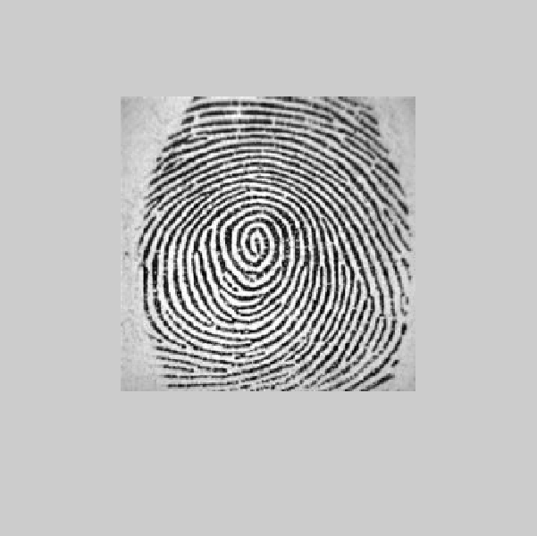
Enhancement
A critical step in automatic fingerprint matching is to automatically and reliably extract minutiae from the input fingerprint images. However, the performance of a minutiae extraction algorithm relies heavily on the quality of the input fingerprint images. In order to ensure that the performance of an automatic fingerprint identification/verification system would be robust with respect to the quality of the fingerprint images, it xould be essential to incorporate a fingerprint enhancement algorithm in the minutiae extraction module.
In our case, the quality of the image is really good, and we wwon't need to enhance our image.
Binarize
We binarize the image. After the operation, ridges in the fingerprint are highlighted with black color while furrow are white.
J=I(:,:,1)>160;
imshow(J)
set(gcf,'position',[1 1 600 600]);
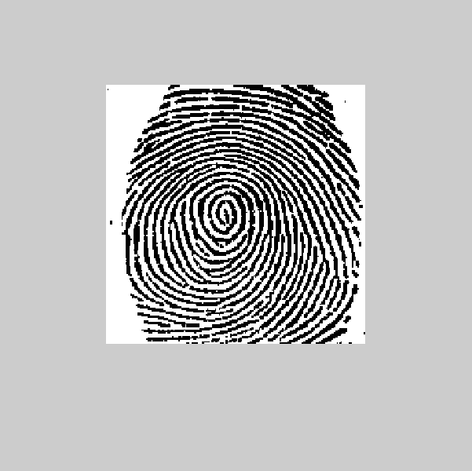 Thining
Ridge thining is to eliminate the redundant pixels of ridges till the ridges are just one pixel wide.
K=bwmorph(~J,'thin','inf'); imshow(~K) set(gcf,'position',[1 1 600 600]);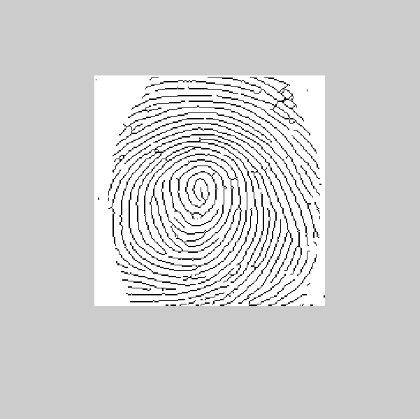
Minutiae
We filter the thinned ridge map by the filter "minutie". "minutie" compute the number of one-value of each 3x3 window: * if the central is 1 and has only 1 one-value neighbor, then the central pixel is a termination. * if the central is 1 and has 3 one-value neighbor, then the central pixel is a bifurcation. * if the central is 1 and has 2 one-value neighbor, then the central pixel is a usual pixel.
fun=@minutie; L = nlfilter(K,[3 3],fun);
Termination
LTerm=(L==1); imshow(LTerm) LTermLab=bwlabel(LTerm); propTerm=regionprops(LTermLab,'Centroid'); CentroidTerm=round(cat(1,propTerm(:).Centroid)); imshow(~K) set(gcf,'position',[1 1 600 600]); hold on plot(CentroidTerm(:,1),CentroidTerm(:,2),'ro')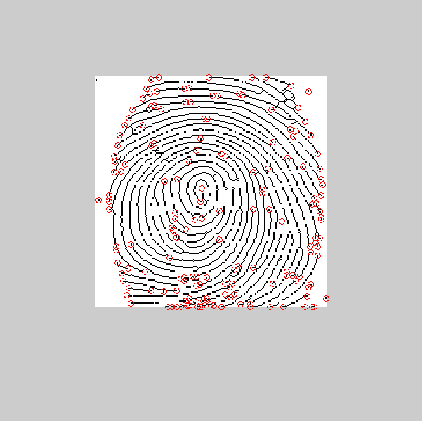
Bifurcation
LBif=(L==3); LBifLab=bwlabel(LBif); propBif=regionprops(LBifLab,'Centroid','Image'); CentroidBif=round(cat(1,propBif(:).Centroid)); plot(CentroidBif(:,1),CentroidBif(:,2),'go')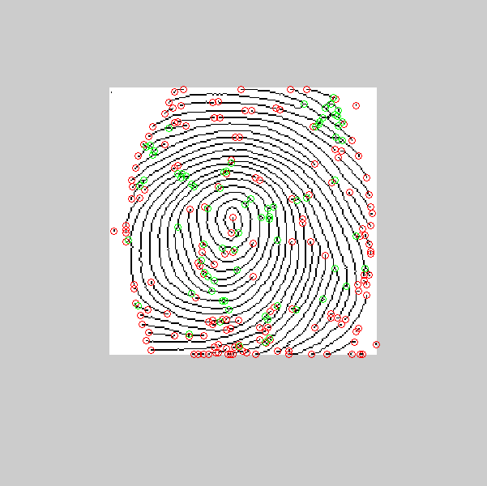
Remarks
We have a lot of spurious minutae. We are going to process them. process 1: if the distance between a termination and a biffurcation is smaller than D, we remove this minutiae process 2: if the distance between two biffurcations is smaller than D, we remove this minutia process 3: if the distance between two terminations is smaller than D, we remove this minutia
D=6;
Process 1
Distance=DistEuclidian(CentroidBif,CentroidTerm); SpuriousMinutae=Distance<D; [i,j]=find(SpuriousMinutae); CentroidBif(i,:)=[]; CentroidTerm(j,:)=[];
Process 2
Distance=DistEuclidian(CentroidBif); SpuriousMinutae=Distance<D; [i,j]=find(SpuriousMinutae); CentroidBif(i,:)=[];
Process 3
Distance=DistEuclidian(CentroidTerm); SpuriousMinutae=Distance<D; [i,j]=find(SpuriousMinutae); CentroidTerm(i,:)=[];
hold off imshow(~K) hold on plot(CentroidTerm(:,1),CentroidTerm(:,2),'ro') plot(CentroidBif(:,1),CentroidBif(:,2),'go') hold off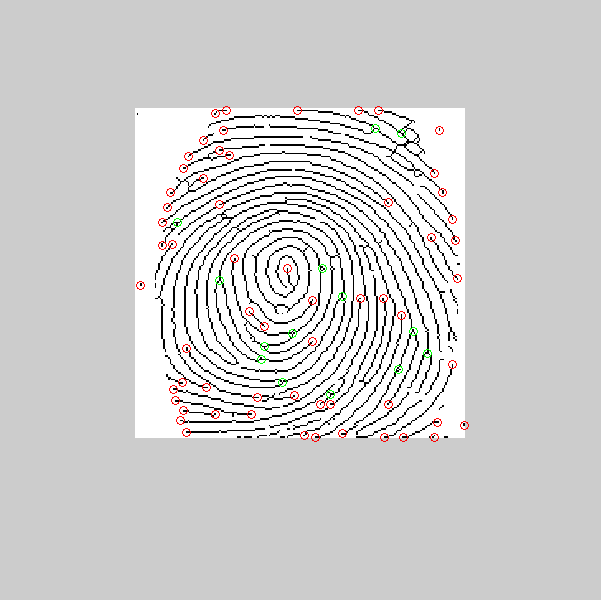
ROI
We have to determine a ROI. For that, we consider the binary image, and we aply an closing on this image and an erosion. With the GUI, I allow the use of ROI tools of MATLAB, to define manually the ROI.
Kopen=imclose(K,strel('square',7)); KopenClean= imfill(Kopen,'holes'); KopenClean=bwareaopen(KopenClean,5); imshow(KopenClean) KopenClean([1 end],:)=0; KopenClean(:,[1 end])=0; ROI=imerode(KopenClean,strel('disk',10)); imshow(ROI)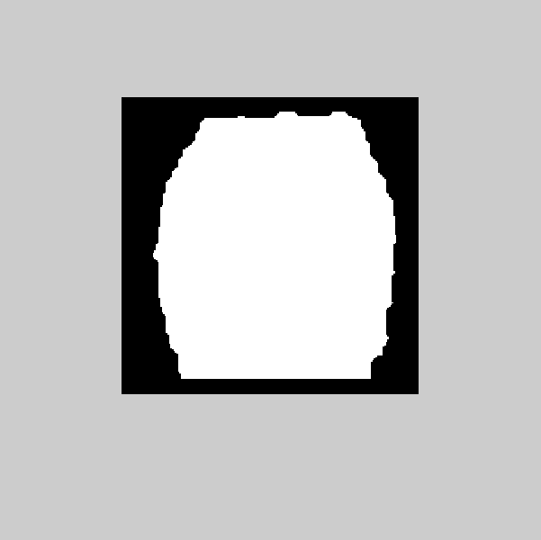
imshow(I) hold on imshow(ROI) alpha(0.5) hold on plot(CentroidTerm(:,1),CentroidTerm(:,2),'ro') plot(CentroidBif(:,1),CentroidBif(:,2),'go') hold off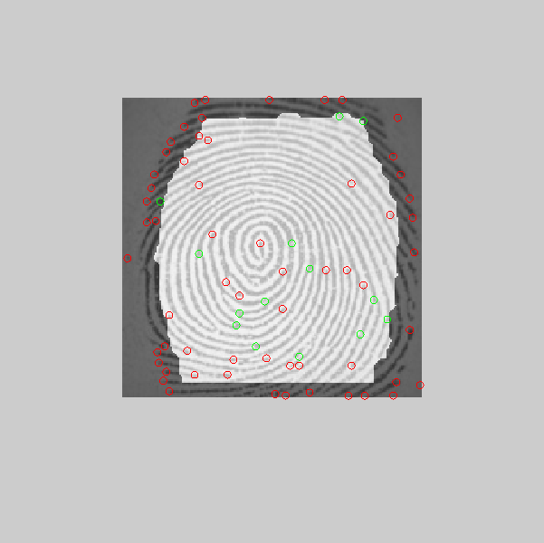
Suppress extrema minutiae
Once we defined the ROI, we can suppress minutiae external to this ROI.
[m,n]=size(I(:,:,1)); indTerm=sub2ind([m,n],CentroidTerm(:,1),CentroidTerm(:,2)); Z=zeros(m,n); Z(indTerm)=1; ZTerm=Z.*ROI'; [CentroidTermX,CentroidTermY]=find(ZTerm); indBif=sub2ind([m,n],CentroidBif(:,1),CentroidBif(:,2)); Z=zeros(m,n); Z(indBif)=1; ZBif=Z.*ROI'; [CentroidBifX,CentroidBifY]=find(ZBif); imshow(I) hold on plot(CentroidTermX,CentroidTermY,'ro','linewidth',2) plot(CentroidBifX,CentroidBifY,'go','linewidth',2)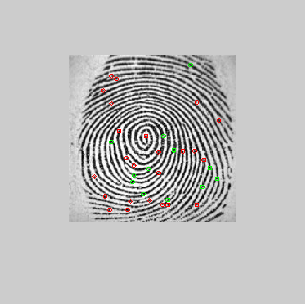
Orientation
Once we determined the differents minutiae, we have to find the orientation of each one
Table=[3*pi/4 2*pi/3 pi/2 pi/3 pi/4
5*pi/6 0 0 0 pi/6
pi 0 0 0 0
-5*pi/6 0 0 0 -pi/6
-3*pi/4 -2*pi/3 -pi/2 -pi/3 -pi/4];
Termination Orientation
We have to find the orientation of the termination. For finding that, we analyze the position of the pixel on the boundary of a 5 x 5 bounding box of the termination. We compare this position to the Table variable. The Table variable gives the angle in radian.
for ind=1:length(CentroidTermX) Klocal=K(CentroidTermY(ind)-2:CentroidTermY(ind)+2,CentroidTermX(ind)-2:CentroidTermX(ind)+2); Klocal(2:end-1,2:end-1)=0; [i,j]=find(Klocal); OrientationTerm(ind,1)=Table(i,j); end dxTerm=sin(OrientationTerm)*5; dyTerm=cos(OrientationTerm)*5; figure imshow(K) set(gcf,'position',[1 1 600 600]); hold on plot(CentroidTermX,CentroidTermY,'ro','linewidth',2) plot([CentroidTermX CentroidTermX+dyTerm]',... [CentroidTermY CentroidTermY-dxTerm]','r','linewidth',2)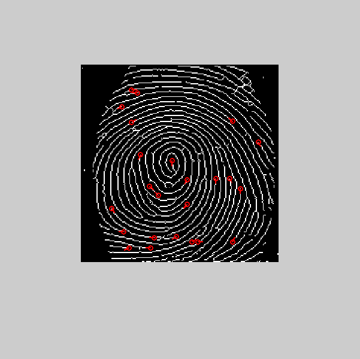
Bifurcation Orientation
For each bifurcation, we have three lines. So we operate the same process than in termination case three times.
for ind=1:length(CentroidBifX) Klocal=K(CentroidBifY(ind)-2:CentroidBifY(ind)+2,CentroidBifX(ind)-2:CentroidBifX(ind)+2); Klocal(2:end-1,2:end-1)=0; [i,j]=find(Klocal); if length(i)~=3 CentroidBifY(ind)=NaN; CentroidBifX(ind)=NaN; OrientationBif(ind)=NaN; else for k=1:3 OrientationBif(ind,k)=Table(i(k),j(k)); dxBif(ind,k)=sin(OrientationBif(ind,k))*5; dyBif(ind,k)=cos(OrientationBif(ind,k))*5; end end end plot(CentroidBifX,CentroidBifY,'go','linewidth',2) OrientationLinesX=[CentroidBifX CentroidBifX+dyBif(:,1);CentroidBifX CentroidBifX+dyBif(:,2);CentroidBifX CentroidBifX+dyBif(:,3)]'; OrientationLinesY=[CentroidBifY CentroidBifY-dxBif(:,1);CentroidBifY CentroidBifY-dxBif(:,2);CentroidBifY CentroidBifY-dxBif(:,3)]'; plot(OrientationLinesX,OrientationLinesY,'g','linewidth',2)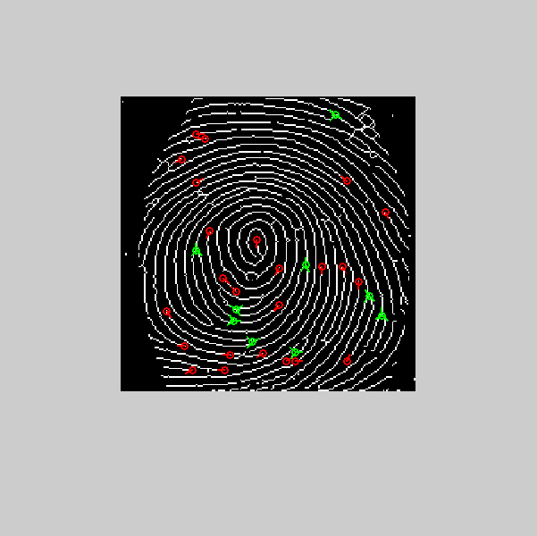
Validation
In this step, we validate the minutiae (cf GUI)
Save in a text file
In this step, we are going to save the minutia in a file
MinutiaTerm=[CentroidTermX,CentroidTermY,OrientationTerm];
MinutiaBif=[CentroidBifX,CentroidBifY,OrientationBif];
saveMinutia('John Doe',MinutiaTerm,MinutiaBif);
Minutia Match
Given two set of minutia of two fingerprint images, the minutia match algorithm determines whether the two minutia sets are from the same finger or not. two steps: 1. Alignment stage 2. Match stage
For this step, I would need a database I don't have...
GUI
TODO: créer le GUI associé